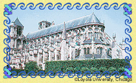

|
 The key to the difference lies in the word cathedral itself, which comes from the Greek word kathedra, meaning seat. A cathedral is the church of a bishop. It is also the administrative headquarters of a diocese, a Church district headed by a bishop. The bishop's throne, a symbol of the office, is located in the cathedral.
|